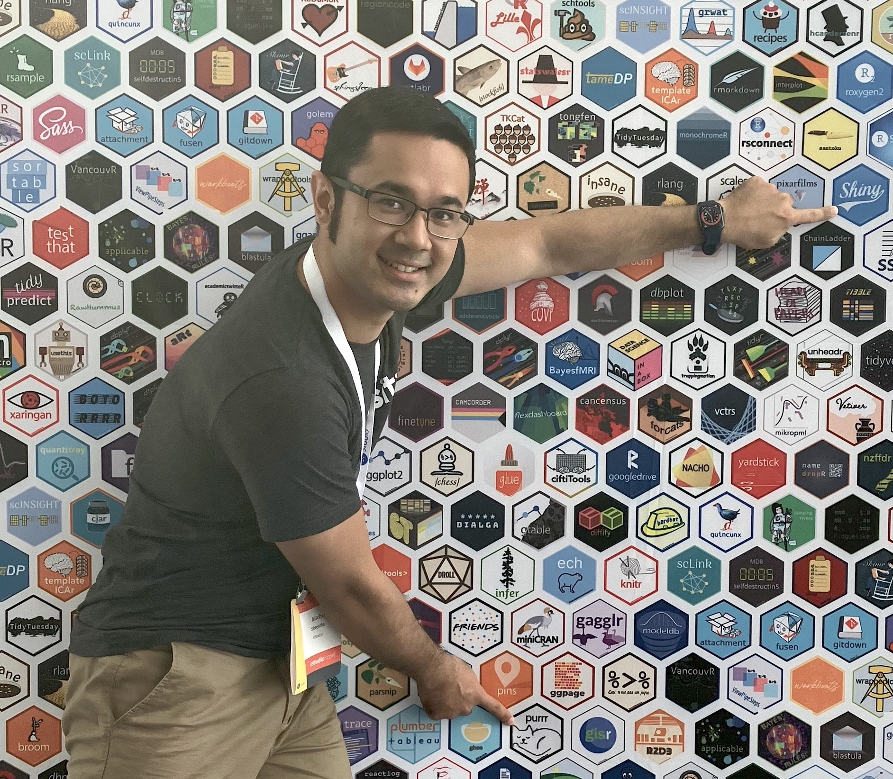

Nischal Shrestha

Hi, I’m Nischal! I love using Python, R, and JavaScript to build fun and useful tools for data scientists. Currently, I’m a Data Science Educator at RStudio where I’m building autograding tools for Academy. During my internship at RStudio from 2020-2021, I worked on data science packages like learnr, or ggcheck to facilitate grading for interactive tutorials.
I did my PhD at North Carolina State University from 2016-2022. My research interests were mainly in the intersection of human-computer interaction, software engineering and programming languages. In particular, I researched new instructional techniques and tools that can help programmers learn programming languages effectively and efficiently with Chris Parnin in the alt-code lab. You can read my dissertation to learn more!
Outside of work, I enjoy hanging out with my friends and family, running, lifting, watching/discussing tv shows/movies, listening to or playing music, and coding for fun.